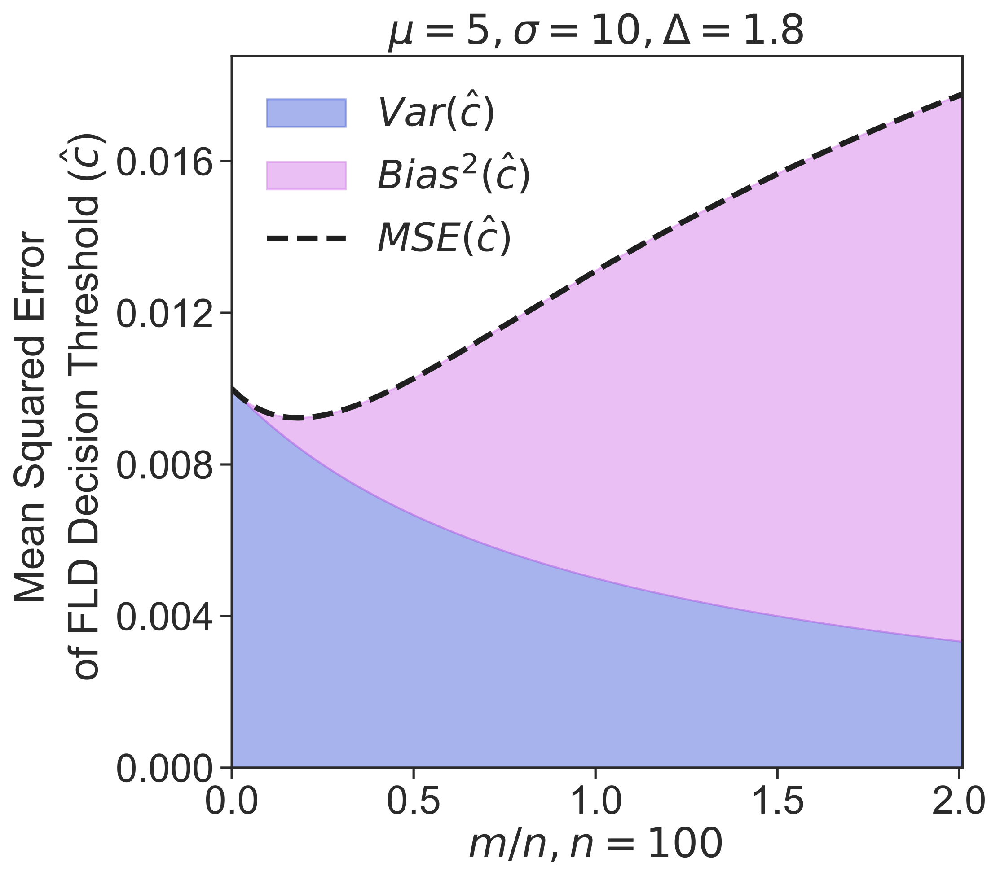
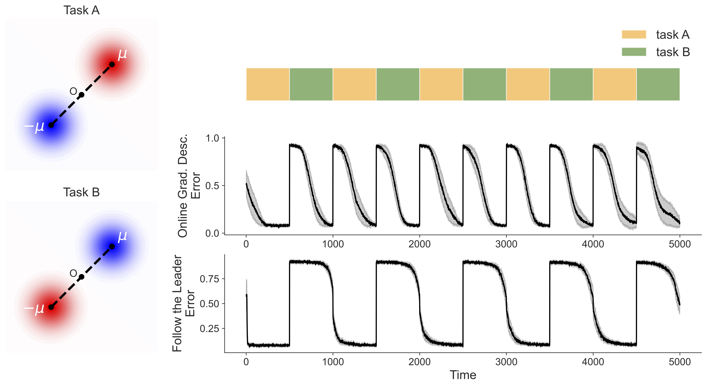

#### Surprise! IID++<br>Out of Distribution & <br>Prospective Learning Joshua T. Vogelstein <br> <!-- , [JHU](https://www.jhu.edu/) <br> --> <!-- Co-PI: Vova Braverman, [JHU](https://www.jhu.edu/) <br> --> Ashwin de Silva, Rahul Ramesh, Pratik Chaudhari, <br>Carey E. Priebe, Timothy Verstynen, Konrad Kording, <br>The Future Learning Collective <!-- | Joshua T. Vogelstein <br> --> <!-- [Microsoft Research](https://www.microsoft.com/en-us/research/): Weiwei Yang | Jonathan Larson | Bryan Tower | Chris White --> <img src="images/neurodata_blue.png" width="20%" style="vertical-align: top; " > <!-- <img src="images/jhu.png" width="8%" style="vertical-align: top"> --> --- #### Outline - Classical Learning - Out of Distribution (OoD) Learning - Prospective Learning --- #### What is learning? --- #### A more modern definition - Assume $Z\_i \sim^{iid} F, \quad i \in [n]$ - Let $L((Z_i)^n) \rightarrow h_n$ - Let $R$ denote risk, eg, expected loss - Let $R^*$ be Bayes optimal risk - $L$ learns iff $\, \exists N$ s.t. $\forall n > N$ <!-- & $\delta, \epsilon > 0$ --> $$\mathbb{P}[ R(h\_n) - R^* < \epsilon ] \geq 1 - \delta$$ - GC thm: for any $F$, $\exists L$ s.t. error ↘ as $n$ ↗ - implication: more data is better! --- #### So learning is solved? - No. --- #### What's the problem Future (validation) data is sampled from a different distribution --- #### Real world failures Can't model real world phenomema very well --- #### Natural Intelligence failures Can't replicate the intelligence of even the simplest organisms --- ## The Value of Out of Distribution Data .footnote[.small[De Silva, et al., The Value of OoD Data. ICML, 2023]] --- #### What is OoD Learning? - Assume source/OoD $Z\_i \sim^{iid} F, \quad i \in [m]$ - Assume target $Z\_i \sim^{iid} F', \quad m < i \leq n+m$ - Let $L((Z\_i)^{n+m}) \rightarrow h\_{n+m}$ - Let $R$ denote risk, eg, expected loss wrt $F'$ - Let $R^*$ be Bayes optimal risk wrt $F'$ - $L$ OoD learns from $F$ about $F'$ if $$\mathbb{P}[ R(h\_{n+m}) - R^* < \epsilon ] \geq 1 - \delta$$ - Question: does more data from $F$ help? --- #### Let's take a poll - Let $E=\mathbb{E}[ R(h\_{n+m}) - R^*]$ be generalization error on $F'$ - Expectation wrt $n$ samples from $F$ and $m$ samples from $F'$ Who thinks as $m$ increases, for fixed $n$, E -- 1. decreases -- 2. increases -- 3. depends on the relationship between $F$ and $F'$ --- #### Let's see: the simplest example - $F$ is two gaussians - $F'$ is two gaussians shifted by $\Delta$ <!-- <img src="https://github.com/neurodata/ood-tl/blob/main/reports/figures/gausstask_fig.png?raw=true" width="700"> --> <!--  --> --- #### E is non-monotonic in $m$! <!-- <img src="https://github.com/neurodata/ood-tl/blob/main/reports/figures/gaussian_task_analytical_plot.svg?raw=true" width="640"> --> - For a fixed $\Delta$, error can be non-monotonic wrt OoD sample size $m$ - implications: more pre-training can hurt! --- #### A Bias/Variance Explanation  --- #### Synthetic image data examples <img src="images/9-simdata-plot.png" width="640"> --- #### Trying to break it --- #### Summary so far - OoD learning is different in kind from in-distribution learning - More OoD data does not necessarily help or hurt, it depends on sample sizes and distributions. - Time to think more carefully about how much data of different kinds to use --- #### What about time? - $L$ OoD learns from $F$ about $F'$ if $$\mathbb{P}[ R(h\_{n+m}) - R^* < \epsilon ] \geq 1 - \delta$$ Does not include time. Let's revisit learning frameworks, and see what is missing --- ## Prospective Learning: Principled Extrapolation to the Future .footnote[.small[De Silva, et al., Prospective Learning: Principled Extrapolation to the Future. CoLLAs, 2023]] --- #### Learning Frameworks - "Classical" PAC Learning: best case scenario, $F\_{future} = F\_{past}$ - Online Learning: worst case scenario, <br> $F\_{future}$ could be adversarial In both cases, the "best" thing to do is whatever would have worked best in the past. --- #### Fancy Learning Frameworks - OoD PAC Learning: $F\_{future} \neq F\_{past}$ - Online meta-learning: $F\_{future} \sim^{iid} G$ - Continual learning: $F\_{future} \sim^{iid} G$, with bias towards previously sampled F's In all these cases, still no ability to predict $F\_{future}$ at all. But what about when one can predict future F's somewhat? --- <img src="images/seligman13.png" width="640"> Learning evolved because it improves future performance in a partially predictable dynamic world --- #### Consider... Moving to Berkeley vs Boston - I imagine challenges I'll face in B-town, and how I'll overcome them - Choose the one that minimizes expected loss integrated over my life - But I only make this choice once --- #### Consider the following sequence <img src="images/task-seq.png" width="640"> -- Has anyone ever run an experiment? --- #### Online SGD & FTL Fail  -- - Online Meta & Continual would do better, but never get to zero error - Because none of these frameworks *prospect* --- #### Formalizing prospection - $\mathcal{H}$ is a set of feasible hypotheses - $t \in \mathcal{T}$ indexes time - $P :=$ { $P\_t$ }$\_{t \geq 0}$ be a sequence of distributions - $D\_{t'} =$ { $z\_t$ }$\_{t < t'}$ be a dataset drawn from $P$ such that $z\_t \sim P\_t$, - $\mathcal{D}$ be the set of all possible datasets A prospective learner $L: \mathcal{D} \times \mathcal{T} \mapsto \mathcal{H}$, so <br> $L(D\_{t'}, t) = \hat{h}\_t^{t'}$, where $\hat{h}\_t^{t'}$ is the hypothesis at time $t > t'$ trained on data up until time $t'$ --- #### Formalizing prospection - $\ell_t : \mathcal{H} \times \mathcal{Z} \mapsto \mathbb{R}$ is a time-varying loss function. - Risk at time $t$ be the expected loss, $ R\_t(L(D\_{t'},t)) = \mathbb{E}\_{z \sim P\_t}\left[ \ell\_t (L(D\_{t'},t) , z) \right]$ <!-- = \mathbb{E}\_{z \sim P\_t} [ \ell\_t ( \hat{h}^{t'}\_t , z) ]$. --> Colloquially, we desire that the expected risk decreases as $t$ increases --- #### Strong Prospective Learnability <img src="images/strong_PL.png" width="640"> Key differences with Strong PAC Learning: - we care about risk integrated over the future - this requires prospecting about (1) what the future will be like, and (2) what we will be like --- #### Weak Prospective Learnability <img src="images/weak_PL.png" width="640"> where $L\_{ERM} : \mathcal{D} \mapsto \mathcal{H}$ be the ERM learner, so $\bar{h}\_0^{t'} = L\_{ERM}(D\_{t'})$. Key additional differences with Weak PAC Learning: - we compare to an ERM learner, meaning it does not include time --- #### Continuum Hypothesis of Learning Hypotheses - Let $P$ is a sequence of distributions, - Let $\mathcal{H}$ is the set of all possible relevant hypotheses. We conjecture that there are multiple classes of learning difficulty 1. P is PAC Learnable 2. P is weakly prospectively learnable (ie, we can do better than ERM) 3. P is strongly prospectively learnable (for some $\epsilon$) 4. P is uniformly prospectively learnable (for all $\epsilon$) 5. P is not prospectively learnable --- #### Did we re-invent the wheel? How is reinforcement learning different from this? - We directly build on statistical decision theory - RL theory assumes POMDP on dynamics, not PL - Vanilla RL focuses on a single task, not PL - RL focuses on inference problem, learning the parameters is a necessary sub-task, PL focuses on the learning problem - RL algorithms require many trials, we care about zero-shot learning --- #### Zooming out - How do we design truly intelligent systems? - How do we solve the AI alignment issue? --- #### Publications 1. De Silva et al. [The Value of Out-of-Distribution Data](https://arxiv.org/abs/2109.14501), ICML, 2023. 1. De Silva et al. [Prospective Learning: Princpled Extrapolation to the Future](https://arxiv.org/abs/2004.12908), CoLLAs, 2023. --- ##### Acknowledgements <img src="images/neurodata2023.jpg" width="640"> .small[NSF Simons MoDL, ONR N00014-22-1-2255, and NSF CCF 2212519] --- ##### Questions? <img src="images/dino_yummies.jpg" width="640">